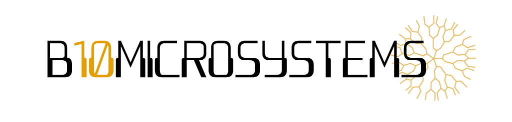

<div class="navbar">

    <a routerLink="/biomicrosystem/login" routerLinkActive="active"><i class="fa fa-fw fa-user"></i> Login</a>
    <a href="https://www.youtube.com/watch?v=KZ58tQCiv0A"><i class="fa fa-youtube-play"></i></a>
      <a href="https://github.com/Biomicrosystems/"><i class="fa fa-github"></i></a>
      <a href="https://www.facebook.com/groups/577532002284046/?mibextid=6NoCDW"><i class="fa fa-facebook"></i></a>
  </div>


<nav class="navbar-expand-sm bg-light contend-nav2">
    <a class="logo" href="#">
      
    </a>